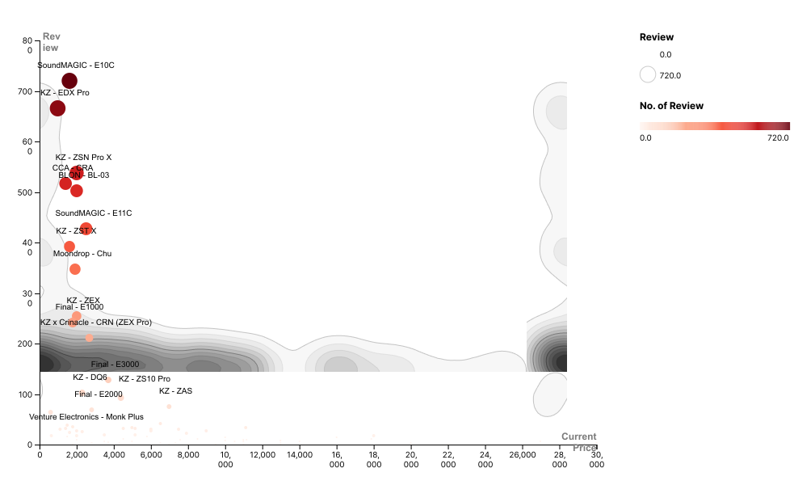

IEMs - Data Visualization
Choosing your beginner audiophile In-Ear Monitors (IEMs)
Any budget audiophile IEMs and headphones for buyers who are on
the lookout for ‘serious’ audio products is always tricky to
choose. While true wireless earbuds undoubtedly add quality and
value to the buyer in terms of convenience and ease of use, if you
choose to trade them for better audio, you get excellent sound
quality that defies the price at which it comes at.
Here we are looking at some of the absolute best budget audiophile
IEMs and headphones to buy in India right now, through an
audiophile mindset.
We will compare range of products and will find perfet pair
for you according to your preference.
Lets Choose Your IEMs
Things we will consider:
1. Budget - The cheapest IEMs and headphones in India
2. Review - The review comparison between different choices
And most important
3. Sound - The best pair of IEMs and headphones for your sound preference
1. Budget
- The cheapest IEMs and headphones in India
2. Review
- The review comparison between different choices


3. Sound
- The best pair of IEMs and headphones for your sound preference
Frequency Spectrum Regions & Vocals / Instruments
SUB BASS
(20Hz - 80 Hz)
The first section of the frequency spectrum is the sub-bass. Everything below 80Hz is sub-bass, so generally, you need a subwoofer or a good pair of headphones (open-back headphones, for example) to hear this region. This region comprises instruments like the Kick Drum and the Bass Guitar. You should be able to hear Sub-Bass if you’re listening on monitors or headphones. But if you’re listening on a laptop or a phone, there’s no way you will hear that.
MID BASS
(80 Hz - 300 KHz)
After the Sub-Bass region, we get into the region known as the Bass or Mid-Bass. This region consists of everything between 80 and 300 hertz. In this area, we’ve got instruments like bass guitar and the low end of a snare. Lots of the low-end vocals as well, because male vocals are going to have the fundamental below 200Hz in most cases.
LOWER MIDRANGE
(300 Hz - 1000 KHz)
Next, if you go from 300 Hz up to 1000 kHz, this is known as the Lower Midrange, and this is a crucial region for music because this is where you get a lot of buildup with guitars, vocals, and even the top-end of the bass guitar especially. Lower Midrange is an area guilty of adding mud to a mix and clarity in this region lifts a track exponentially.
UPPER MIDRANGE
(1 KHz - 6 KHz)
Human hearing focuses inherently on this frequency range. So it’s crucial to get this range right. This region consists of the main focus of the track (e.g. vocals) and synths. Be aware that this is also where you can start to get into harshness and aggressive tones.
TREBLE
(6 KHz - 10 KHz)
After the Upper Midrange, we’ve got the Treble region between 6kHz and 8 kHz, and this is where things start to get harsh. This region is where we have brittleness from instruments like the Hi-Hats and Cymbals. This is also a crucial range for clarity and aggression, especially for female vocals.
AIR
(10 KHz - 20 KHz)
At the end of the frequency spectrum, we get to the Air region or the Top End. This region consists of everything above 10 kHz. This is where we have air and this is where we get a sense of shine and sparkle in our music.
 1.png)
 1.png)